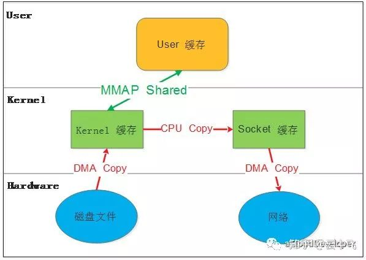

非零拷贝
不是零拷贝的情况下是如何进行的，有什么不好的地方？
一次读取磁盘文件发送到网络的数据的拷贝过程：

- 用户态：用户进程开辟的内存中的数据
- 内核态：操作系统或者说文件系统的内存缓冲区
数据不是直接从用户进程的内存直接发送到硬件（例如磁盘、网卡），而是先通过cpu拷贝到内核缓冲区，然后不定时的同步到硬件中（例如持久化到磁盘中）。
内核层的这块缓存的优缺点：
- 缺点：数据的发送需要经过这样一个中间过程，消耗一定的cpu资源，数据发送速度也会相应变慢一些
- 有点：数据首先写入内核缓冲区，下次读取的时候，可以直接从内核缓冲区中读取，速度比直接读取磁盘要快的多
对于操作系统频繁的操作来说，这个拷贝过程对于性能的影响还是比较大的。但是完全采用直接内存，不依赖内核缓冲区，频繁的直接从磁盘读取数据的速度会慢很多。
用户态直接IO

直接干掉了内核层缓存，直接访问硬件设备，进行IO操作。
这种方式的弊端在于，虽然写操作减少了一次拷贝的过程，但是读操作长久看来并不是加快了，例如读取机械硬盘中的数据，如果没有内核层缓存，每次数据读取都需要磁盘磁头的旋转、寻道等机械运动，速度肯定很慢。
所以采用这种IO方式的应用，通常都在应用层做好了缓存，避免上面提到的每次都去磁盘中读取数据的速度慢的问题，例如数据库管理系统就是一个典型的代表。
mmap

将用户内存和内核缓冲区进行映射，相当于用户进行读写操作的时候，直接操作的是内核缓冲区内存，而不是写入自己进程内存之后，再拷贝到内核缓冲区。
上图中的磁盘读取发送到网络的过程中，数据直接从内核缓存拷贝到socket缓存，而不是内核缓存->用户内存->socket缓存，整个过程更快
参考
- 『码洞』公众号：『面试题：如何理解 Linux 的零拷贝技术？』
- 『占小狼的博客』公众号：『浅析Linux IO，你需要知道的底层』